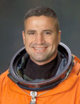

Lyndon B. Johnson Space Center
Houston, Texas 77058
|
National Aeronautics and Space Administration Lyndon B. Johnson Space Center Houston, Texas 77058 |
 |
Biographical Data |
||
George D. Zamka (Colonel, USMC, ret.)
NASA Astronaut (Former)
PERSONAL DATA: Born in 1962 in Jersey City, New Jersey. Raised in New York City; Irvington, New York; Medellin, Colombia; and Rochester Hills, Michigan. Married to the former Elisa P. Walker of Mississippi; they have two children. He enjoys weightlifting, running, bicycling, scuba diving and boating. His mother, Sofia Zamka, and brother, Conrad P. Zamka, both live in Florida. His father, Conrad Zamka, resides in Indiana.
EDUCATION: Graduated from Rochester Adams High School, Rochester Hills, Michigan, in 1980. Received a Bachelor of Science degree in Mathematics from the United States Naval Academy in 1984; received a Master of Science degree in Engineering Management from the Florida Institute of Technology in 1997.
ORGANIZATIONS: Association of Space Explorers, United States Naval Academy Alumni Association, Marine Corps Association and Marine Corps Aviation Association.
SPECIAL HONORS: NASA Space Flight Medal (two), NASA Outstanding Leadership Medal, Legion of Merit, Distinguished Flying Cross, Defense Meritorious Service Medal, Meritorious Service Medal, Navy Strike Air Medal (six), Navy Commendation Medal with Combat V and various other military service and campaign awards. Distinguished Graduate, United States Naval Academy. Commodore’s list and Academic Achievement Award, Training Air Wing Five. Awarded the Officer’s Cross of the Order of Merit of the Republic of Poland.
EXPERIENCE: Zamka was commissioned as a second lieutenant in the United States Marine Corps after graduating from the United States Naval Academy in May 1984. After basic flight training, he was trained as an A-6E pilot at Whidbey Island, Washington, from 1987 to 1988. He then flew with Marine All Weather Attack Squadron VMA(AW)-242 in El Toro, California. He served in administration and flight safety roles and also as squadron weapons and tactics instructor. In 1990, he trained to be an F/A-18 pilot and was assigned to Marine All Weather Fighter Attack Squadron VMFA(AW)-121, also in El Toro. He flew the F/A-18D Night Attack Hornet during overseas deployments to Japan, Korea, Singapore and Southwest Asia. Zamka flew 66 combat missions over occupied Kuwait and Iraq during Desert Storm. In 1993, he served with 1st Battalion, 5th Marines in Camp Pendleton, California, and the 31st Marine Expeditionary Unit in the Western Pacific. He was selected to attend the United States Air Force Test Pilot School class 94A and graduated in December 1994. Zamka was then assigned as an F/A-18 test pilot/project officer and the F/A-18 operations officer for the Naval Strike Aircraft Test Squadron (NSATS). While assigned to NSATS, Zamka flew a wide variety of tests in the F/A-18 Hornet, including high angle of attack, loads, flutter, crew equipment and weapon system programs. Zamka returned to VMFA(AW)-121 in 1998 and was serving as the aircraft maintenance officer deployed to Iwakuni, Japan, when he was selected for the astronaut program. Colonel Zamka retired from the Marine Corps in August 2010.
He has logged more than 5,000 flight hours in more than 30 different aircraft.
NASA EXPERIENCE: Selected as a pilot by NASA in June 1998, Zamka reported for astronaut candidate training in August 1998. He has served in various technical and leadership roles in the Astronaut Office, including space rendezvous and proximity operations, landing and rollout instructor and lead for shuttle systems within the Shuttle Operations Branch. Zamka served as lead for the Shuttle Training and Procedures Division and as supervisor for the astronaut candidate class of 2004. In 2007, he completed his first spaceflight as pilot on STS-120. For his second spaceflight, Zamka commanded the crew of STS-130, which flew in February 2010. Colonel Zamka has logged more than 692 hours in space. In March 2013, Zamka retired from NASA. He is now serving as the Deputy Associate Administrator, Federal Aviation Administration, for Commercial Space Transportation.
SPACEFLIGHT EXPERIENCE: STS-120 Discovery (October 23 to November 7, 2007) launched from and returned to land at the Kennedy Space Center, Florida. During the mission, the Node 2 element Harmony was delivered to the International Space Station. This element opened up the capability for future international laboratories to be added to the station. In addition, the P6 solar array was relocated from the Z1 truss to the end of the port side of the integrated truss structure. During the redeploy of the array, the array panels snagged and were damaged. An unplanned spacewalk was successfully performed to repair the array. The mission was accomplished in 238 orbits, traveling 6.2 million miles in 15 days, 2 hours and 23 minutes.
STS-130 Endeavour (February 8 to February 21, 2010) launched at night, carrying aloft the final International Space Station permanent modules, Tranquility and Cupola. Tranquility (or Node 3) is now the life-support hub of the station, containing exercise, water recycling and environmental control systems, while Cupola provides the largest set of windows ever to grace a spacecraft. These seven windows, which are arranged in a hemisphere, provide a spectacular and panoramic view of our planet and afford crews a direct view of space station robotic operations. During the 13-day, 18-hour mission, Endeavour and her crew traveled more than 5.7 million miles and completed 217 orbits of the Earth, touching down at night at Kennedy Space Center in Florida.
MARCH 2013
This is the only version available from NASA. Updates must be sought from the above-named individual.
{kind=link}